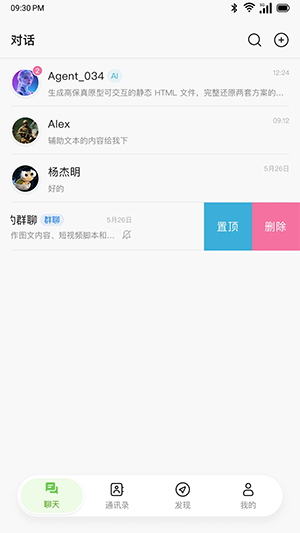

手机里装了个会派活的 AI？UniClaw 上手一周真实体验
朋友安利我装 UniClaw 之前，我以为就是又一个套壳聊天机器人。一周下来发现它确实有点不一样——智能体分工、消息通道接入、Credits 扣费机制，每块都踩在了"能不能真用起来"的节点上。
上周吃饭时朋友掏出手机给我演示了一个应用——对着屏幕发了句话，过了十几秒收到一段整理好的合同风险分析。我当时以为是某个 AI 聊天工具的高级用法，结果他说这叫 UniClaw，一个可以把各种 AI 智能体装进口袋的手机应用。说实话我一开始没抱太大期待，不过它的官网上有段产品介绍，说这东西跟普通聊天机器人不太一样，套壳 AI 工具我见过不少，大多是新鲜两天就卸载了。但耐不住好奇心，吃完饭回家我就从下载拿了一个装上。
第一眼：不是打开就能用的聊天框
安装完打开，迎接我的不是一个可以直接打字的对话框，而是让我先选头像和昵称。这个设定本身就挺有意思——你不是"访客"，你是这个应用里有身份的人。接着是手机号验证码登录，流程很顺，短信几秒就到，六位数填完就进去了。唯一需要注意的是年龄门槛，14 周岁以下没法注册，这个在登录前就会明确提示。

进到主界面的第一感觉是干净。没有弹窗、没有新手引导教程、没有逼着你先绑定这绑定那。底部四个 Tab，最核心的就是中间那个聊天入口和左边的发现页。发现页里按类别摆了一堆智能体卡片——合同审查、合规风控、招聘管家、文档生成、数据分析……光看名字就知道每个智能体专注一件事，不是那种啥都能干但啥都干不精的通用助手。
这一点让我印象很深。之前用 AI 工具，每次都得花半天在提示词里调教"请你扮演一个合同审查专家"，现在直接点开一个已经预设好定位的智能体就能开干。当然，代价是你得自己判断哪个智能体适合你的场景——这反而比让 AI 自己猜你的意图靠谱。
用了一周，三个印象最深的功能
合同审查专家：AI 真的能帮你抓合同里的坑
第一个让我觉得"这钱花得值"的是合同审查专家。上周刚有个兼职合同要签，我把合同文本直接粘贴给它，说了句"重点帮我看看竞业限制和违约金"。大概过了一分钟，它逐条给我列了审查结果，每条都标注了风险等级（高/中/低），然后用大白话解释这条风险到底意味着什么，还给出了具体的修改措辞建议。
说实话我当时有点震惊。不是震惊它能识别出竞业限制期限超过 2 年违法这种常识性问题，而是它真的会用"这条对你意味着什么"这种角度来解释。比如有一条写的是"高风险，按当地法规竞业限制期限超过 2 年的部分无效，建议修改为不超过 2 年，补偿金不低于月工资 30%"——这不是在念法律条文，是在给我一个可以直接抄进去的修改方案。
当然它自己也说了不能替代律师，金额大的合同还是得找专业人士过。但作为一个初筛工具，把明枪暗箭先指出来，我觉得完全够用了。

Telegram 接入：把 AI 搬到你最常用的聊天工具里
UniClaw 的云端托管意味着 AI 7×24 在线，但每次打开手机应用毕竟还是有个"启动成本"。接入 Telegram 这个功能解决了这个问题——在应用设置里找到消息通道，打开 Telegram 开关，按提示走一遍 OAuth 授权，全程不用手动创建 Bot、不用填 API Token，授权完在 Telegram 里就能直接跟 AI 对话。
授权完成后两边的对话是同步的。手机上聊到一半，换电脑打开 Telegram 网页版可以继续；设了定时任务，结果会自动推到 Telegram。对我这种经常在电脑前办公的人来说，这比掏出手机打字方便太多了。而且 Telegram 消息自动存下来，想翻之前的对话记录也很方便。
唯一让我稍微纠结了一下的是安全——OAuth 令牌留在服务器上，只有完成授权的账号能对话，不想用了可以一键断开。确认完这些细节我就放心开用了。
Credits 机制：用多少扣多少
Credits 是 UniClaw 的计费单位。刚注册送了一些额度，用完就得自己补。我一开始对这种按量计费的模式有点抵触，总觉得会不会不知不觉就烧光了。但用了一周下来发现反而有好处——每次发消息之前你会下意识想一下"这次任务值不值得花这些 Credits"，反而不会像用免费工具那样无脑刷屏浪费。
余额用完 AI 就不回复了，去"我的"页面一眼就能看到还剩多少。这个设计挺直接的，没有什么隐藏消费或者自动续费，没额度了就是没了，你自己决定要不要充。
那些让我觉得别扭的地方
说了好的，也说点不太爽的。第一个是偶尔会遇到 AI 长时间不回复。不是 Credits 用完那种，是消息发过去之后一直显示"处理中"，过了两三分钟还没动静。排查了几次之后发现大概率是网络或者服务端临时波动——退出重进、换个智能体、或者等个十来分钟基本都能恢复。UniClaw文档里列了详细的排查步骤，从网络检查到缓存清理都有覆盖，但真遇到的时候还是会有点小焦虑。
第二个是智能体的选择成本。发现页上挂了几十个智能体，每个的功能边界和擅长什么需要自己摸索。文档站里有详细的说明，但在手机上逐个点开看还是挺费时间的。如果能在发现页加个标签筛选或者"新手推荐"分区，可能会更友好。
适合谁，不适合谁
如果你是那种"我有具体任务要搞定，不想跟 AI 扯半天闲天"的人——写合同、做数据分析、整理资料、生成文档——UniClaw 的"专职智能体"模式会很对路。特别是消息通道接入之后，可以直接在你日常用的聊天工具里派活，不用特意切换应用。
但如果你想要一个能陪你聊天、能跟你随便唠唠的通用 AI 伙伴，那可能不太合适。UniClaw 的定位很明确：就是个干活的工具，不是情感陪伴。它不会跟你聊今天天气怎么样，也不会接你的茬开玩笑。另外按量计费的模式对偶尔用用的人来说可能不太划算——注册送的 Credits 够玩个几次，但长期用就得考虑成本。
写在最后
用了一周下来，我对 UniClaw 的评价是"能用的工具"，不是"惊艳的玩具"。它没有什么颠覆性的黑科技，智能体分工和消息通道接入本质上都是现有能力的合理组合，但组合得确实挺到位的——从发现、挑选、对话、到结果接收，整个流程跑通了，没有卡在中间某个环节让你想摔手机。
我现在手机里它还在，Credits 也续了点。合同审查之后用了几次文档生成和数据分析，每次都挺靠谱。下一个想试的是飞书接入，这样在公司电脑上也能直接用。如果你刚好也在找一个"能真干活"的手机端 AI 工具，可以试试。文档维护我在GitHub、Gitee、GitCode三个仓库各传了一份，哪个顺手用哪个。